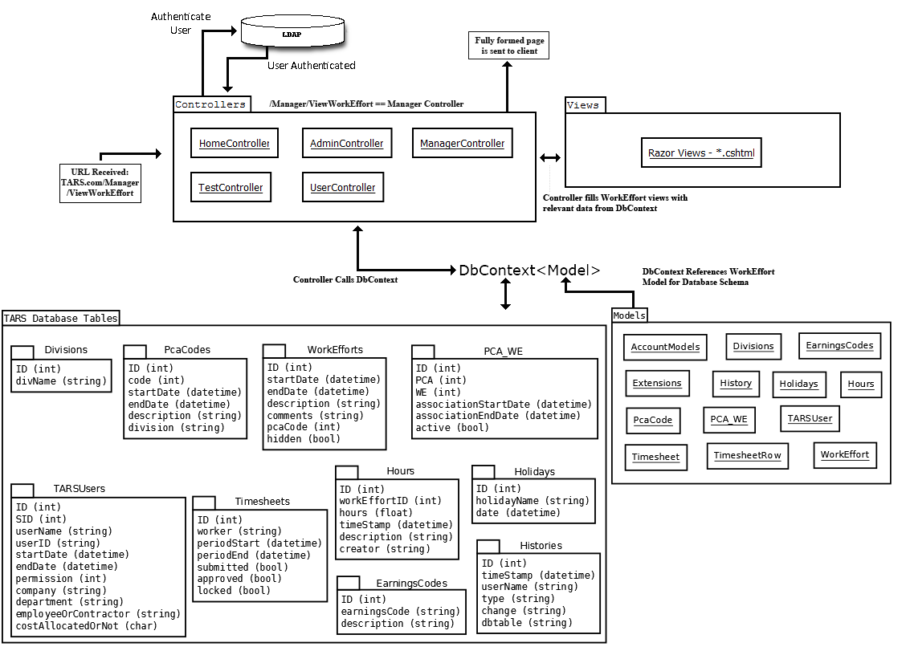

| Idaho Cost and Budget Management |
|---|
| A team developing the Idaho Department of Health/Welfare Time, Accounting, and Reporting System |
Project Concepts
LDAP Authentification
TARS will eventually authenticate users by utilizing Active Directory. At this time, the TARS development team does not have access to a copy of Windows Server 2008. With that being the case, Active Directory services are unavailable to test development progress. To alleviate this problem, TARS will instead authenticate to LDAP servers in general, rather than Active Directory specifically.For development of TARS, the TARS team will utilize Apache Directory Server; a LDAP server built using Java. On user login, TARS will authenticate the inputted username and password using the LDAP server. If an entry that matches existson the LDAP server, the user will be logged in (cookie stored in cache).
IIS7 Model-View-Controller Interaction
In some MVC implementations, the Model component actually provides database interaction (SQL queries, data management, etc). The IIS7 MVC, however, does not. Instead, it uses its Model Components as data objects that have fields corresponding to columns in the SQL database table schemas.To store and retrieve data, the TARS MVC will generally follow this pattern:

- A Controller Action is called, creating a corresponding View as well as DbContext.
- The DbContext is given a Model filled with relevent information.
- The DbContext carries out its task. Returns to the Controller.
- If the View was retrieving from the database rather than using user input for database input, it will return to the Controller and fill its relevant fields with data from the DbContext.